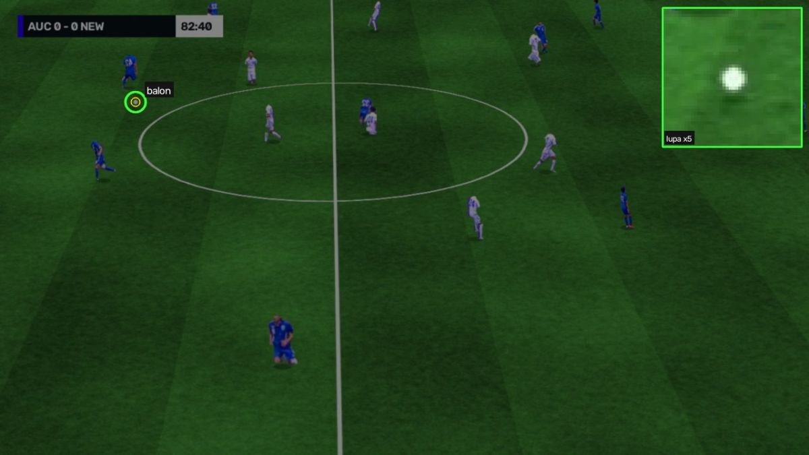
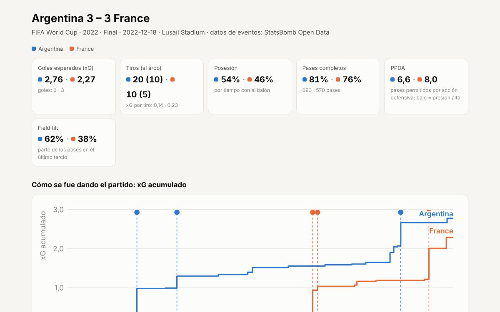
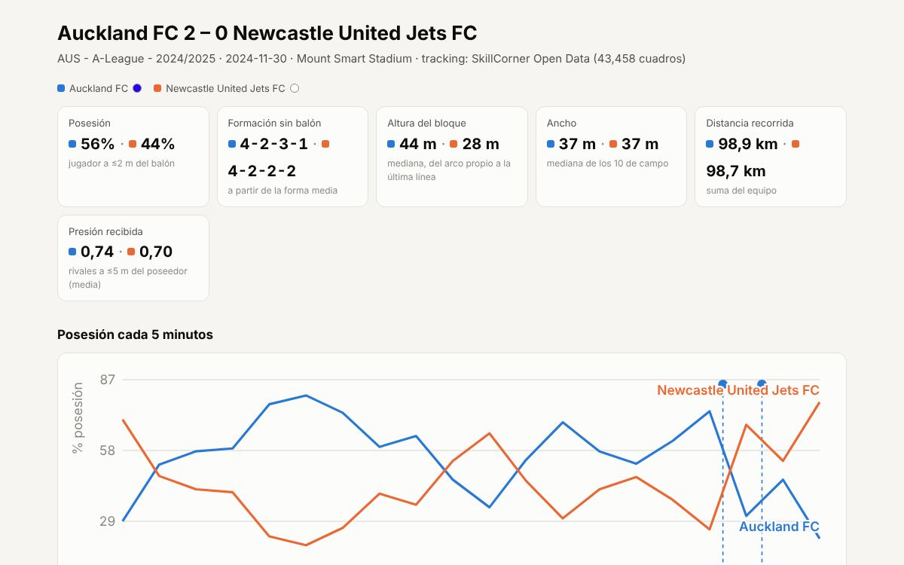
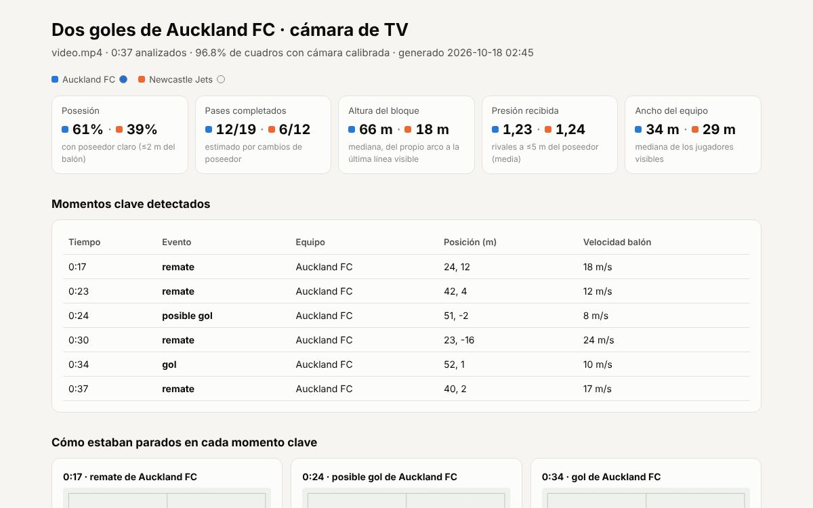
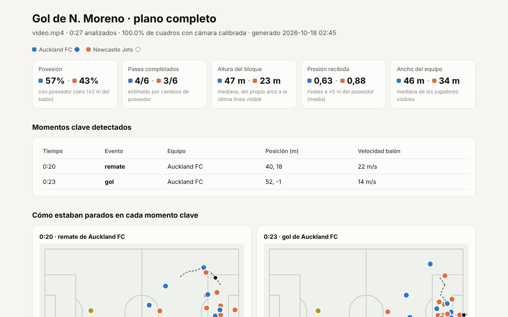
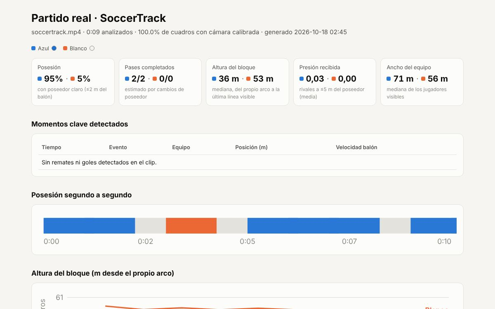
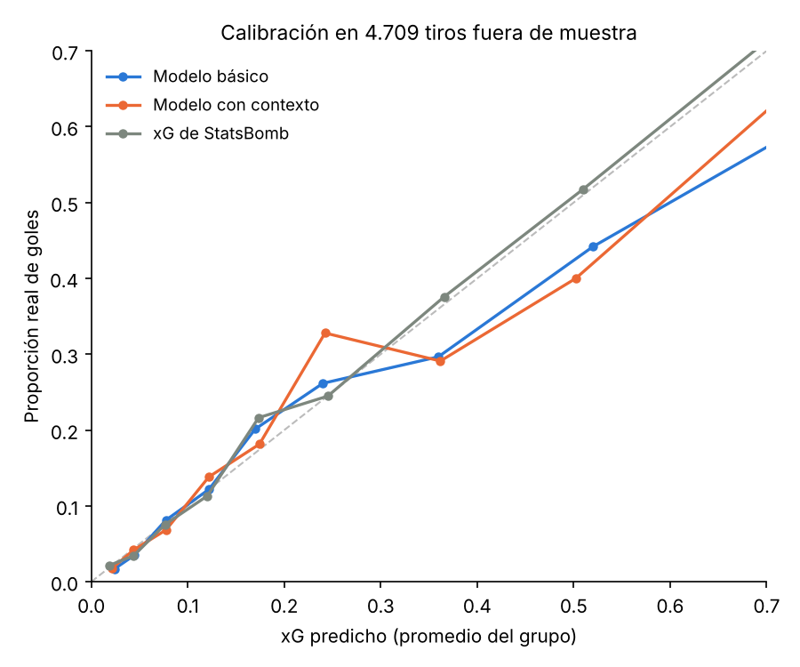

Transmisión, capturadora o archivo
- Detección de jugadores y balón con YOLO
- Equipos por color de camiseta, sin entrenar nada
- Calibración con 4 clics y seguimiento del paneo y el zoom
- Posesión, pases, presión, bloque, físico y goles
Análisis de datos de fútbol · código abierto
Analista lee un partido desde el video, sea la señal del televisor, una grabación o la pantalla del PC, y ubica a cada jugador y el balón en metros. Con eso, y con datos abiertos de eventos y tracking, calcula xG, posesión, presión, formación y control de cancha, y entrega reportes listos para compartir.
Tres fuentes, un mismo esquema
Todo llega a las mismas tablas, en metros y con el origen en el centro de la cancha. El mismo código sirve para un partido de StatsBomb, uno de SkillCorner o tu propio video.
Con video
Se instala en tu PC y se usa desde el navegador. No sube nada a internet.
Un archivo, la capturadora HDMI conectada a la salida del decodificador, la pantalla o una URL.
Cuatro o más clics en la imagen y su punto en la cancha. Las líneas rojas muestran si calza.
Ves el cuadro anotado y la posesión en vivo mientras procesa.
Video con minimapa, reporte HTML y tablas CSV de posiciones, pases y eventos.

Cómo detecta
El panel muestra qué hizo la app en cada etapa y por qué. Sirve para confiar en el resultado y para entender un error.
Ejemplos
Archivos HTML autocontenidos, con tema claro y oscuro, que se abren en cualquier navegador.





Medido, no supuesto
Para medir el error hace falta saber la verdad de cada cuadro. Por eso la app se prueba con transmisiones generadas a partir del tracking real de SkillCorner: los jugadores son recortes de video real, la cámara de TV repite el paneo y el zoom de la transmisión original y cada toma se calibra con clics simulados con 2 px de error (el clip de TV tiene dos tomas, separadas por una repetición).
| Medida | Plano completo cámara fija, 1920 px, 28 s | Cámara de TV paneo y zoom, 1280 px, 38 s | Qué significa |
|---|---|---|---|
| Jugadores detectados | 97,4% | 91,1% | de los que se ven en cada cuadro |
| Detecciones correctas | 99,4% | 86,7% | lo detectado que era un jugador real, a ≤2 m |
| Error de posición | 0,13 m | 0,55 m | mediana; el 90% bajo 0,22 m y 1,59 m |
| Equipo correcto | 99,5% | 95,4% | jugadores de campo, por el color de la camiseta |
| Identidad estable | 99,0% | 91,4% | una pista sigue siempre al mismo jugador |
| Balón ubicado | 36% | 44% | cuadros con balón visible en que la app lo ubica a ≤2 m |
| Cámara calibrada | 100% | 100% | error mediano en la cancha: 0,06 m y 0,97 m |
| Posesión de Auckland | 57% / 90% | 61% / 84% | estimada / real, en los cuadros analizados |
| Goles detectados | 1 de 1 | 2 de 2 | el balón cruza la línea entre los postes (±2 s) |
| Velocidad | 1,4 cuadros/s | 3,2 cuadros/s | CPU de 2 núcleos sin GPU, a 1920 y 1280 px |
Reproducible con demo/generar_transmision.py y demo/evaluar.py. El detector es
YOLO11n entrenado con COCO, sin ajuste para fútbol.
Modelo xG propio
Regresión logística entrenada con 9.817 tiros de la Premier League 2015/16 y evaluada en 4.709 tiros sin penales del Mundial 2022, la Euro 2020 y 2024 y la Copa América 2024, que no vio al entrenar. Usa distancia, ángulo, cabeza, balón parado, presión, primer toque, defensores en el cono de tiro y la posición del arquero.

Empezar
Python 3.10 o más nuevo, en Windows, macOS o Linux.
pip install "analista-futbol[todo] @ git+https://github.com/jazaineam1/analista-futbol"
analista panel
Se abre en el navegador, en localhost:8765. La guía explica cómo conectar la capturadora HDMI.
# reporte de la final del Mundial 2022 analista datos statsbomb reporte 3869685 # analizar un video ya calibrado analista analizar partido.mp4 -c calibracion.json # en Python from analista import Partido p = Partido.skillcorner(1886347) p.formacion("A")["formacion"] # '4-2-3-1'
Para saber antes